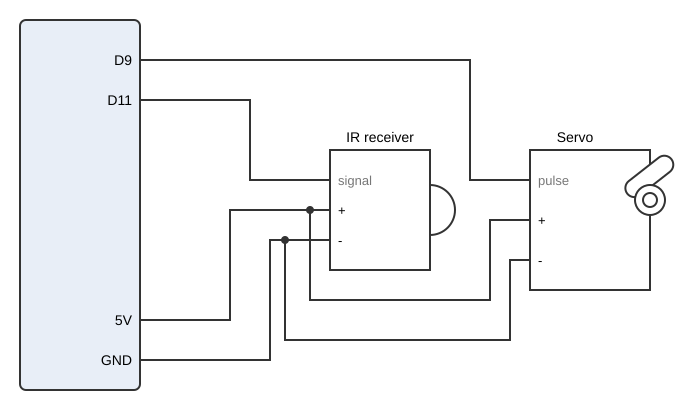
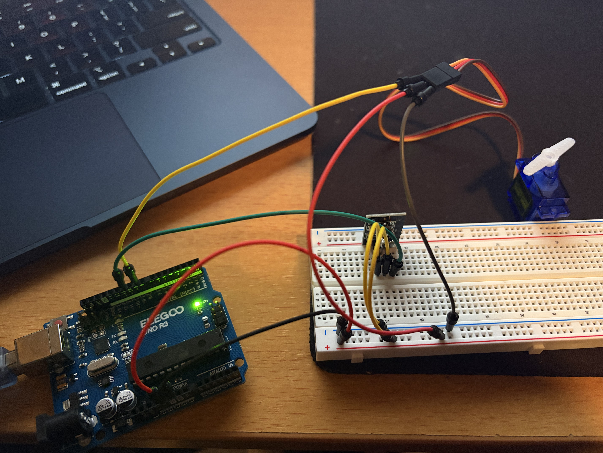
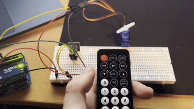
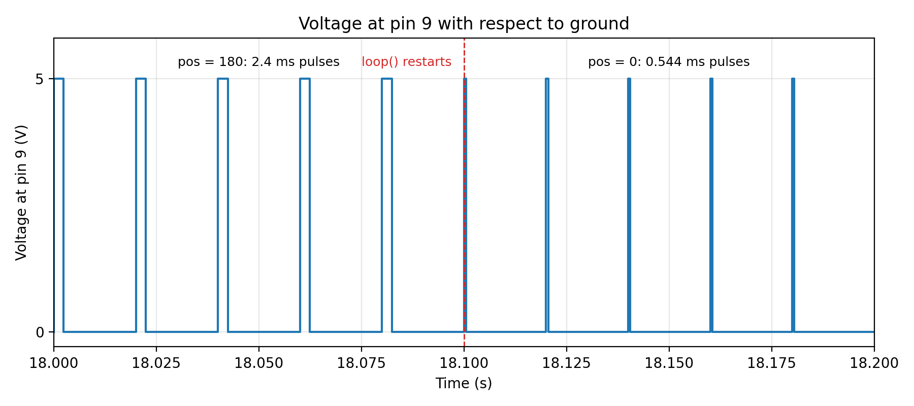

Overview
The IR remote and receiver are
the input, and a servo that turns the mount is the output. VOL+ and
VOL- nudge the mount 10° at a time, keys 0 to
9 jump to preset angles, and the power button recenters it. The
project uses two libraries: IRremote to decode the
remote and Servo to drive the mount.
Schematic

Value choices
Button codes
| Button | NEC command | Action |
|---|---|---|
| VOL+ | 0x46 | +10° per press |
| VOL- | 0x15 | -10° per press |
| Power | 0x45 | Return to 90° |
| 0 to 9 | 0x16, 0x0C, 0x18, 0x5E, 0x08, 0x1C, 0x5A, 0x42, 0x52, 0x4A | Jump to key × 20° (0° to 180°) |
I confirmed each code by pressing the button and reading the serial monitor.
Angles
| Value | Setting | What it corresponds to |
|---|---|---|
| STEP_DEG | 10° | Small enough to aim precisely, while the number keys cover big jumps (a full 0° to 180° turn is 18 presses). |
| PRESET_DEG | 20° | Ten keys spread evenly over the servo's range: key 0 = 0°, key 9 = 180°. |
| CENTER_DEG | 90° | The mount faces straight ahead. |
| constrain(0, 180) | 0° to 180° | The servo's physical range, so pressing VOL+ at 180° can't ask for an angle it can't reach. |
The project doesn't use analogRead(): the receiver gives
a digital signal that the library decodes into exact button codes, so
there is no sensor range to calibrate.
Circuit

Firmware
// Include the IRremote library to decode the remote's NEC signals
#include <IRremote.hpp>
// Include the Servo library to move the mount to set angles
#include <Servo.h>
// Pin wired to the IR receiver's signal leg
const int IR_PIN = 11;
// Pin wired to the servo's signal wire
const int SERVO_PIN = 9;
// Degrees the mount moves per VOL+ or VOL- press
const int STEP_DEG = 10;
// Degrees between number-key presets, so key 9 lands on 9 x 20 = 180
const int PRESET_DEG = 20;
// Angle the power button returns the mount to
const int CENTER_DEG = 90;
// NEC command code for the power button
const int BTN_POWER = 0x45;
// NEC command code for VOL+
const int BTN_VOL_UP = 0x46;
// NEC command code for VOL-
const int BTN_VOL_DOWN = 0x15;
// NEC command codes for keys 0 to 9, in order
const int DIGIT_CODES[10] = {0x16, 0x0C, 0x18, 0x5E, 0x08, 0x1C, 0x5A, 0x42, 0x52, 0x4A};
// Servo object for the mount
Servo mount;
// Current mount angle in degrees, starting at center
int angle = CENTER_DEG;
void setup() {
// Start serial at 9600 baud to print each button press
Serial.begin(9600);
// Start the IR receiver and flash the onboard LED whenever a signal arrives
IrReceiver.begin(IR_PIN, ENABLE_LED_FEEDBACK);
// Connect the mount servo to its signal pin
mount.attach(SERVO_PIN);
// Move the mount to the starting angle
mount.write(angle);
}
void loop() {
// Check whether a full IR signal has been received and decoded
if (IrReceiver.decode()) {
// Get the button's command code
int command = IrReceiver.decodedIRData.command;
// Start from the current angle in case the button isn't one we use
int newAngle = angle;
// VOL+ turns the mount up one step
if (command == BTN_VOL_UP) {
// Add one step
newAngle = angle + STEP_DEG;
// VOL- turns the mount down one step
} else if (command == BTN_VOL_DOWN) {
// Subtract one step
newAngle = angle - STEP_DEG;
// Power returns the mount to center
} else if (command == BTN_POWER) {
// Go to the center angle
newAngle = CENTER_DEG;
// Any other button might be a number key
} else {
// Check the command against each number key
for (int d = 0; d < 10; d++) {
// Find the key that matches
if (command == DIGIT_CODES[d]) {
// Key d goes to d x 20 degrees
newAngle = d * PRESET_DEG;
}
}
}
// Keep the angle inside the servo's 0 to 180 range
angle = constrain(newAngle, 0, 180);
// Move the mount to the new angle
mount.write(angle);
// Label the command code on the serial monitor
Serial.print("Command: 0x");
// Print the command code in hex
Serial.print(command, HEX);
// Label the angle
Serial.print(" | Angle: ");
// Print the angle and end the line
Serial.println(angle);
// Get the receiver ready for the next signal
IrReceiver.resume();
}
}Circuit operation

Additional questions
1. Voltage at pin 9 for the servo sweep

myservo.write(pos) only changes
how long each pulse lasts: 0.544 ms at pos = 0 up to 2.4 ms at
pos = 180, about 10.3 µs wider per degree. Each angle is kept for
100 ms (5 pulses), so one sweep takes 181 × 100 ms = 18.1 s.
Then loop() restarts and the pulses drop back to
0.544 ms. The graph zooms in on that moment, from 18.0 s to 18.2 s,
since individual pulses aren't visible over the whole 18 seconds.
2. An erroneous reading 1% of the time
Only act on codes that match a button the sketch uses. The NEC format
sends each command followed by an inverted copy, and IRremote drops
signals where the two don't match, so most bad readings never decode.
One that slips through almost always decodes to a code outside the 13
buttons the sketch knows, so it gets thrown away instead of moving the
mount. My firmware already works this way: an unknown code leaves
newAngle at the current angle.
known buttons = VOL+, VOL-, POWER, 0 to 9
when a signal is decoded:
command = the decoded button code
if command is in known buttons:
move the mount for that button
otherwise:
ignore it
get ready for the next signalFor a sensor that gives numbers, use a median of the last three readings instead. One bad value is always the highest or lowest of the three, so the middle value ignores it.
keep the last 3 readings
every loop:
replace the oldest reading with a new one
value = the middle of the 3 readings
use value3. Readings that randomly deviate up or down by 10%
For a numeric sensor, use a moving average of the last 10 readings. Random errors up and down cancel out, and averaging N readings shrinks random noise by about √N, so ±10% becomes roughly ±3%. The trade-off is a short lag when the real value changes.
N = 10
keep the last N readings and their total
at startup:
fill all N slots with real readings and add them to the total
every loop:
subtract the oldest reading from the total
replace the oldest reading with a new one
add the new reading to the total
average = total / N
use averageFor the IR receiver, the noisy measurement is the length of each pulse. Averaging doesn't fit there because every pulse carries a different bit, so the fix is a tolerance window: accept a pulse if it lands within ±25% of the expected length, which absorbs ±10% noise with room to spare. IRremote already decodes this way.
for each pulse measured:
if it is between 75% and 125% of the expected length:
count it as a match
otherwise:
reject the signal4. Use of AI tools
I used Claude to assist with the python code to generate the graph for question 1.